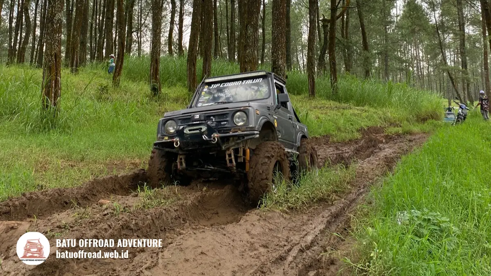

Itinerary 1 Hari Coban Talun Offroad dan Kuliner Batu
Sehari umumnya cukup untuk itinerary Coban Talun 1 hari yang berisi satu aktivitas utama seperti fun offroad, waktu istirahat, dan kuliner di Kota Batu. Agar tidak terburu-buru, jangan memadatkan lebih dari dua aktivitas besar dan konfirmasikan durasi paket ke operator.
- Itinerary Coban Talun 1 hari bisa dibagi menjadi pagi, siang, dan sore dengan satu atau dua aktivitas utama.
- Pagi cocok untuk aktivitas fisik seperti fun offroad karena cuaca lebih sejuk.
- Siang dipakai untuk makan dan istirahat, sedangkan sore untuk aktivitas ringan dan kuliner.
- Durasi aktivitas berbeda antaroperator, jadi wajib dikonfirmasi.
- Sisakan waktu cadangan untuk perjalanan, antrean, dan perubahan cuaca.
Bagaimana Rangkuman Itinerary 1 Hari Coban Talun?
Rangkuman itinerary 1 hari Coban Talun adalah pagi untuk aktivitas utama seperti fun offroad, siang untuk makan dan istirahat, serta sore untuk kegiatan ringan dan kuliner di Kota Batu.
Kerangka ini dapat disesuaikan dengan jumlah peserta, kebugaran, dan durasi paket. Jam pasti bergantung pada operator dan lokasi penginapan.
| Waktu | Kegiatan Utama | Catatan |
|---|---|---|
| Pagi | Fun offroad atau kunjungan kawasan Coban Talun | Berangkat lebih awal |
| Siang | Makan dan istirahat | Pulihkan stamina |
| Sore | Aktivitas ringan dan kuliner | Sesuaikan dengan cuaca |
Kota Batu sangat ramai pada masa liburan. Pemkot Batu mencatat 778.235 wisatawan selama libur Lebaran 2025, naik dari 564.622 pada 2024 (ANTARA, April 2025). Pada periode ramai, antrean dan perjalanan dapat memakan waktu lebih lama, sehingga itinerary perlu dibuat longgar.
Cukupkah sehari untuk Coban Talun?
Sehari umumnya cukup untuk menikmati Coban Talun dengan satu atau dua aktivitas utama, selama perjalanan dari penginapan dan waktu antrean tidak terlalu panjang.
Bila Anda datang dari jauh, seperti Surabaya, pertimbangkan menginap agar tidak terlalu lelah. Rombongan besar juga membutuhkan waktu koordinasi lebih panjang. Konfirmasikan durasi aktivitas ke operator sebelum menyusun jadwal.
Apa yang Dilakukan pada Pagi Hari?
Kegiatan pagi pada itinerary Coban Talun sebaiknya aktivitas utama yang membutuhkan tenaga, seperti fun offroad, karena udara masih sejuk dan stamina peserta masih penuh.
Pagi hari umumnya lebih cerah dan tidak terlalu panas. Pandangan ke pegunungan juga cenderung lebih jelas. Kawasan wisata pun biasanya lebih lengang dibanding siang.
Langkah pagi hari:
- Berangkat lebih awal dari penginapan.
- Sarapan ringan sebelum kegiatan.
- Tiba di basecamp sesuai jam kumpul untuk briefing.
- Mengikuti fun offroad atau menikmati kawasan air terjun.
- Berfoto di titik singgah dengan aman.
Siapkan pakaian tertutup, sepatu bertali, jaket tipis, masker, dan pelindung ponsel. Durasi fun offroad berbeda tiap paket. Tanyakan lamanya ke operator agar jadwal siang tidak terganggu.

Jeep offroad hitam melintasi jalur lumpur di hutan pinus saat pagi hari, mengawali petualangan seru itinerary Coban Talun bersama Batu Offroad.
Apa yang Dilakukan pada Siang Hari?
Kegiatan siang pada itinerary Coban Talun sebaiknya makan siang, istirahat, dan membersihkan diri agar stamina pulih sebelum melanjutkan kegiatan sore.
Setelah aktivitas pagi, tubuh biasanya lelah dan berdebu. Beri waktu untuk makan dan beristirahat. Memaksakan aktivitas berat langsung setelah makan dapat membuat peserta tidak nyaman.
Saran kegiatan siang:
- Makan siang di tempat makan sekitar kawasan atau di Kota Batu.
- Ganti pakaian bila basah atau kotor.
- Isi ulang air minum.
- Istirahat singkat bagi peserta yang kelelahan.
- Gunakan waktu untuk membahas rencana sore.
Pada hari ramai, tempat makan dapat penuh. Pertimbangkan reservasi atau datang lebih awal. Tanyakan kepada operator apakah tersedia rekomendasi tempat makan atau paket konsumsi.
Apa yang Dilakukan pada Sore Hari?
Kegiatan sore pada itinerary Coban Talun sebaiknya ringan, seperti menikmati suasana Kota Batu, berfoto, atau mencicipi kuliner khas, sambil bersiap pulang atau kembali ke penginapan.
Sore hari cocok untuk aktivitas santai karena stamina menurun. Kota Batu dikenal memiliki beragam pilihan kuliner dan tempat bersantai, termasuk olahan buah khas daerah dataran tinggi. Ketersediaan dan jam buka tiap tempat berbeda, jadi periksa terlebih dahulu.
Opsi kegiatan sore:
- Mencicipi kuliner hangat untuk menahan udara dingin.
- Berbelanja oleh-oleh khas Batu.
- Berjalan santai di area wisata yang ramah rombongan.
- Beristirahat di penginapan bila perjalanan pulang masih jauh.
Perhatikan cuaca sore yang dapat berubah menjadi hujan di daerah pegunungan. Bawa jas hujan ringan dan hindari berkendara dalam kondisi lelah.
Bagaimana Tips Mengatur Waktu Itinerary Satu Hari?
Tips mengatur waktu itinerary satu hari adalah membatasi aktivitas besar, menyisakan waktu cadangan, berangkat pagi, dan mengonfirmasi durasi setiap kegiatan sebelum menetapkan jadwal akhir.
Saran praktis:
- Batasi aktivitas. Satu atau dua aktivitas utama sudah cukup.
- Beri waktu cadangan. Perjalanan, antrean, dan cuaca dapat menggeser jadwal.
- Konfirmasi durasi. Tanyakan lama paket ke operator.
- Tunjuk koordinator. Satu orang menghubungi operator dan mengatur kelompok.
- Siapkan rencana cadangan. Siapkan alternatif bila hujan deras.
- Pantau stamina. Sesuaikan kecepatan jadwal dengan peserta paling lambat.
- Booking jauh hari. Terutama pada akhir pekan dan libur panjang.
Prioritaskan keselamatan di atas kelengkapan agenda. Bila operator menyarankan penundaan karena cuaca, ikuti saran tersebut.
Peserta dengan kondisi kesehatan tertentu sebaiknya berkonsultasi dengan dokter sebelum mengikuti aktivitas fisik. Informasi ini bersifat umum.
Untuk gambaran lengkap kawasan dan aktivitas lainnya, baca panduan utama wisata coban talun.
Kesimpulan
Itinerary Coban Talun 1 hari dapat disusun dengan pagi untuk aktivitas utama, siang untuk istirahat dan makan, serta sore untuk kegiatan ringan dan kuliner di Kota Batu. Jadwal yang longgar membuat perjalanan lebih nyaman.
Ingin menyusun trip offroad seru 1 hari di kawasan Coban Talun? Hubungi Batu Offroad Adventure di 0812-3398-9707 untuk konsultasi rute dan paket terbaik.
FAQ
-
Cukupkah sehari untuk Coban Talun?
Umumnya cukup untuk satu atau dua aktivitas utama, selama perjalanan dan antrean tidak terlalu lama. Bila datang dari jauh, pertimbangkan menginap agar lebih nyaman. -
Jam berapa sebaiknya mulai itinerary?
Mulailah pagi hari agar cuaca sejuk dan kawasan lebih lengang. Jam pasti bergantung pada jadwal operator, jadi konfirmasikan jam kumpul dan durasi kegiatan. -
Apa yang dilakukan bila hujan di tengah itinerary?
Hubungi operator untuk menanyakan penyesuaian rute atau jadwal. Siapkan jas hujan dan aktivitas pengganti, seperti kuliner atau bersantai di tempat berteduh. -
Apakah itinerary ini cocok untuk anak-anak?
Itinerary bisa disesuaikan untuk anak dengan jalur ringan dan lebih banyak waktu istirahat. Tanyakan batas usia operator dan awasi anak sepanjang kegiatan.
Artikel Terkait